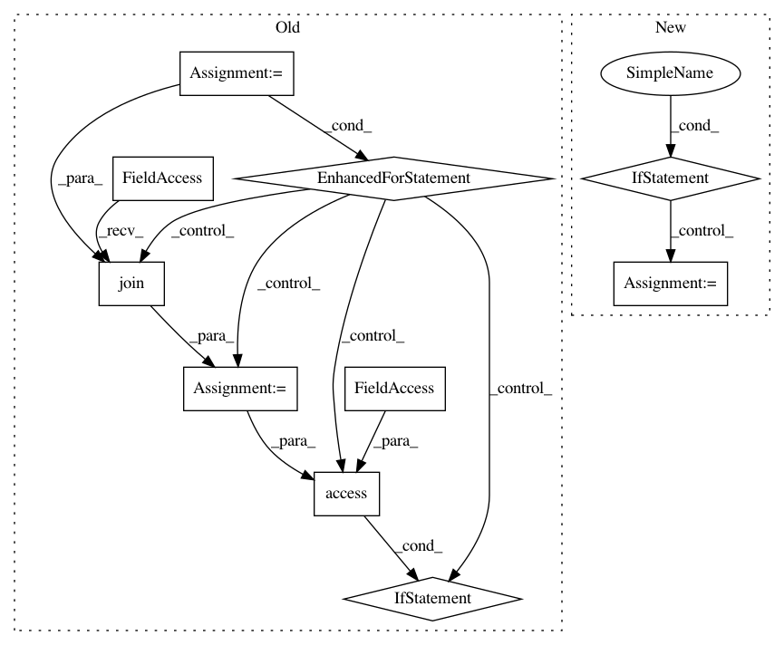

8c4162c3666a2b238b2b60c3f94bb8102c4ef6cf,pysb/kappa.py,,set_kappa_path,#Any#,35
Before Change
global _kappa_path
_kappa_path = dir
// Check locations of both KaSim and KaSa
for kappa_prog in ["KaSim", "KaSa"]:
kappa_prog_path = os.path.join(dir, kappa_prog)
// Make sure file exists and is not a directory
if not os.access(kappa_prog_path, os.F_OK) or \
not os.path.isfile(kappa_prog_path):
raise Exception("Could not find %s in %s." %
(kappa_prog, os.path.abspath(dir)))
// Make sure file has executable permissions
elif not os.access(kappa_prog_path, os.X_OK):
raise Exception("%s in %s does not have executable permissions." %
(kappa_prog, os.path.abspath(dir)))
def _get_bng_path():
Return the path to BioNetGen"s BNG2.pl.
After Change
kasa_path = _check_dist_dir("KaSa", dir)
// Check that KaSim executable exists and is not a directory
if kasim_path is None:
raise Exception("Could not find KaSim in %s." % os.path.abspath(dir))
else:
_kasim_path = kasim_path
// Check KaSa, but only raise a warning if it"s not found because it"s
// not installed by default with the KaSim distribution.
if kasa_path is None:
warnings.warn("Could not find KaSa in %s; install KaSa for static "
"analysis features." % os.path.abspath(dir))
else:
In pattern: SUPERPATTERN
Frequency: 3
Non-data size: 10
Instances
Project Name: pysb/pysb
Commit Name: 8c4162c3666a2b238b2b60c3f94bb8102c4ef6cf
Time: 2016-04-05
Author: bachmanjohn@gmail.com
File Name: pysb/kappa.py
Class Name:
Method Name: set_kappa_path
Project Name: tensorflow/tensorflow
Commit Name: 448e080c752a1b5f54c422401b41e824b0274a91
Time: 2020-11-17
Author: crccw@google.com
File Name: tensorflow/python/distribute/multi_process_lib.py
Class Name:
Method Name: _set_spawn_exe_path
Project Name: tensorflow/tensorflow
Commit Name: de336139770c6e9e035c0e402375efda48d75301
Time: 2020-11-18
Author: crccw@google.com
File Name: tensorflow/python/distribute/multi_process_lib.py
Class Name:
Method Name: _set_spawn_exe_path